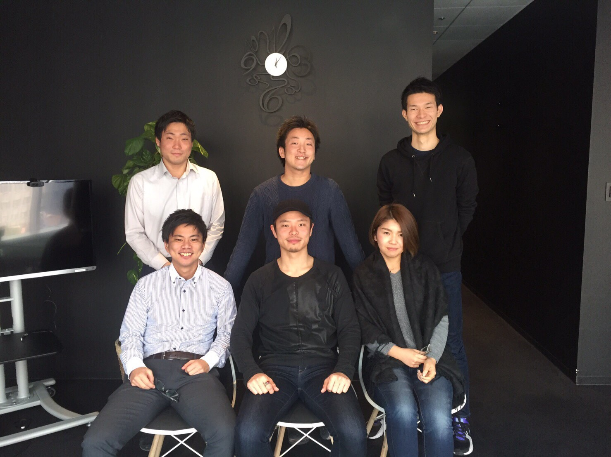
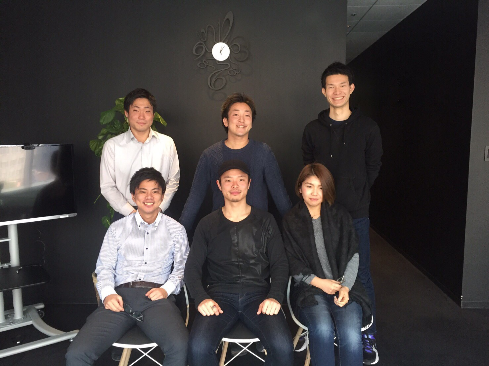
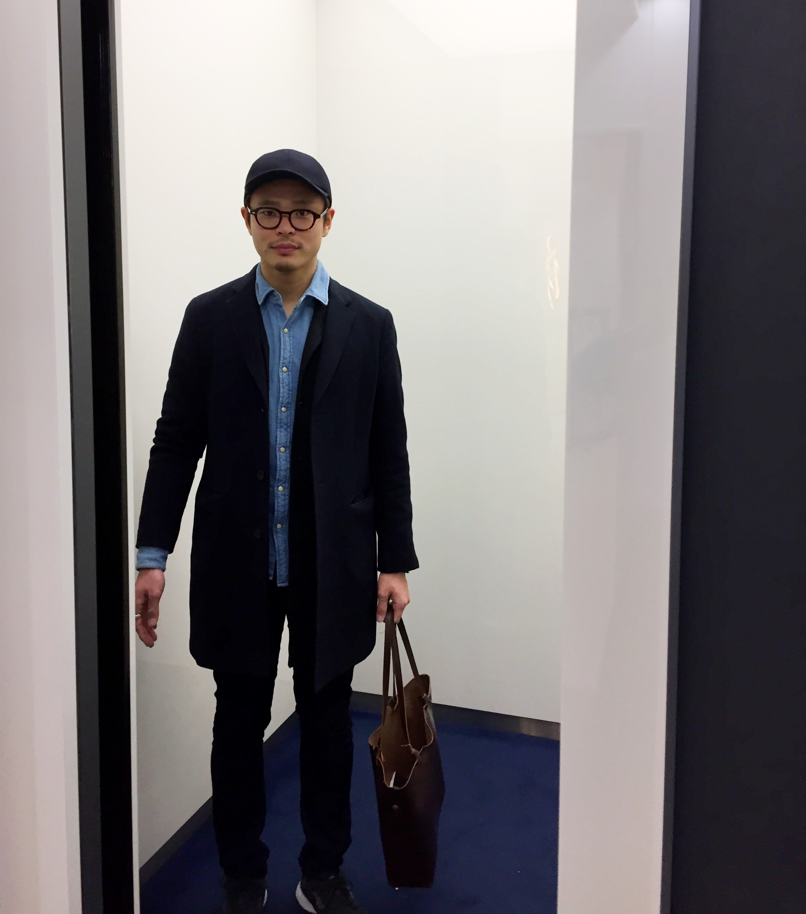

レバテックメンバーと大阪支店のみなさま、ありがとうございました！/高橋 彗

みなさま、お疲れ様です！インターン一同です！
今回は私たちの企画のスピンオフ!!
なんとけいさんから、レバテックメンバーと大阪支店全体への、お別れメッセージ!!
先週の金曜日を最後に大阪支店を旅立ったレバテック大阪のけいさんに秘密裏にインタビューしてきました！
けいさんからいただいてきた、メッセージをしっかりと文字に起こしましたので、ぜひお読み頂ければ幸いです！

今回は私たちの企画のスピンオフ!!
なんとけいさんから、レバテックメンバーと大阪支店全体への、お別れメッセージ!!
先週の金曜日を最後に大阪支店を旅立ったレバテック大阪のけいさんに秘密裏にインタビューしてきました！
けいさんからいただいてきた、メッセージをしっかりと文字に起こしましたので、ぜひお読み頂ければ幸いです！

高橋 彗さん / Kei Takahashi
2015年9月入社 元レバテック事業部大阪支店の営業/現人事部中途採用チーム責任者
入社後すぐにテレアポ数で事業部内ギネスを樹立。
その後レバテック大阪チームリーダーの高橋悠人さんの推薦のもと、レバテック大阪支店へ。
２０１７年1月23日より人事部中途採用チームの責任者へ着任。
ー大阪支店での１番の思い出はなんですか？
レバテックの大阪チームで、1000万円達成という目標を、
2ヶ月も前倒しで達成することができたことが一番の思い出です。
元々は1000万円の売り上げ目標は、今年の一月の目標だったんです。
それをかなり前倒しで達成することができたことは感動的でした。
ウェブの流入が少ない時期に、流入を待っていても仕方がなかったので、
こちら側から求職者にアプローチをかけることができる他者との提携媒体を使い、人を集めることにしたんです。
流入に関してまで営業で頭を使い、
どうやって企業と求職者をクロージングできるかなってアイデアを出し合い、
みんな一丸で頑張った結果、２ヶ月前倒しで目標を達成することができました。
なにより、このチームで達成できたのが本当に嬉しかったです。
やっぱり、仕事をする上で誰と働くか、どういう雰囲気で働くかってとても重要だと改めて感じました。
ーチームを離れる心境はいかがですか？
チームを離れるのは本当に寂しいです。
半年しかいませんでしたし、まだ抜けたらまずい状況なのかもしれませんが、
でも組織って意外と、中心的な人がある程度まで引っ張って、いきなりポンと抜けてしまった方が、
残りのみんながより成長できるのかと思っています。
いないからこそ自分たちで何とかしなくちゃいけないので。
でももし困っていたら遠隔でも全力でサポートしますよ！
ー人事部に異動になることに対してお気持ちはどうですか？
凄く楽しみです。
人事部は現在、責任者も人事部長も事情があって辞めてしまったので、
ある意味まっさらな状態から始められるというのは本当に楽しみです。
また、本気で全社をよくしたいと思っていますのでいいチャンスだと思います。
私は一昨年の９月に入社したのでまだ入社して1年3ヶ月しかたっていないのですが、
最初は自分の目先の売り上げを追うような仕事観で働いていました。
ですが、大阪支店の立ち上げで、全体的な施策改善を行ったり、
その施策がうまくいったら他の支店に横展開させたりだとか、
組織全体をみて業務をする感覚が養われて、そこに面白みを感じ始めました。
今度は人事の中途採用の責任者として、一つの事業部だけでなく、
全社的に組織を改善することができるので、
よりスケールアップした組織を動かすという意味で、本当に楽しみですね。
あとは直属の上司が岩槻さんということにもなるので、ワクワクしていますね。
正直な話、ハードワークになるのは目に見えているのですが、、、（笑）
でも滅多にないチャンスですので、今はモチベーション高く頑張れそうです！
もしかしたら数ヶ月後に、
「俺が思ってたのと違ったわ（笑）」って言って大阪支店に帰って来るかもしれないので、
その時は暖かく迎え入れてくださいね（笑）
ーレバテックのメンバーへメッセージをください。
パッとは思いつきませんね、ずっと一緒にいるので(笑)
一言、人事のお手伝い、よろしくお願いします笑
ー以上ですか！？
冗談です（笑）
とても感謝しています。本当に自由にさせてくれたんですよ。
仕事超楽しそうっしょ？（笑）
あれは全部悠人さんのおかげなんですよ。
お互いに信じあって仕事ができていたと感じていて、やりがいがありました。
いい場合だとすぐに「いいですねやってください」って言っていただけますし、
もしダメな場合でもすぐに詰めるべき点を察知して、「でもここって弱くないですか？」とフィードバックをくれます。
悠人さん、本当にありがとうございました。
くんは、いつも俺がやり散らかしたことを全部きれいに回収してくれました(笑)
本当に感謝しているのは、私が思いついたこと、やりたいことを具体化するためには、
彼がいなかったら難しかったと思います。
彼は全体的なところを俯瞰して見る力がとても高く、
その能力は私にはまだまだない力なので本当に助かりました。
また、キムくんは営業未経験なんですが、センス抜群なんで、あとはひったすら時間かければ100パーセントなんでも売れてます。
そうなれば、間違いなく市場的に無敵な人材です。こわいくらい。
大好きだよ瀬戸くん。
終始大好きって言ってたってこと伝えておいてください（笑）以上です。（笑）
冗談です（笑）
瀬戸くんは一言でいうと本当に真面目ですね。
最近、私が抜けることに対して危機感が芽生えてきたようで、
よく自分から能動的な施策提案や、改善提案を積極的に行ってくれるようになった上に、
それを遂行まで行ってくれることが多くなったので、見違えるほどに頼もしくなってきました。
最初は心配ばかりしていましたが、
今の自発的な姿勢を見ると大きく成長したなとしみじみ感じます。
異動が決まった時は、もっと瀬戸くんに教えてあげられることがあったはずだな、と感じ、
それを伝えきれないことにとても後悔を感じましたが、
今の姿勢をみると、安心して人事に行くことができますね。
瀬戸くんはめちゃくちゃ売ると思いますよ。
自身で幅ないことをネタにしてますが、1年くらいしたら幅なんてつくんで間違いなく無敵です。
せんちゃんも大好きです（笑）
せんちゃんはおそらく東京配属になると思うので、私からのメッセージは一言。
「東京で飲もうよ。」
以上です。（笑）
まぁ、あと50年くらい笑って酒飲めるやつとして認めてます。
初日からカラコンつけてスマホいじりだしたんで、アホかこいつは、と思いましたが（それもまた面白かった）、
吸収スピード抜群で、今では超頼もしく、営業からしたら足を向けて眠れない大事なパートナーです。
あと、言語化できない人間としての魅力もあるので、早く正社員になってもらいたいです。
大阪支店の皆様には本当に感謝してます。
本社って割と年齢が若くて、大学の延長のような文化が強いんです。
それはそれでとても素敵な文化なのですが、
それと比べて大阪支店は年齢層的にアダルトな雰囲気が強いんですね。
フレッシュすぎずガチガチすぎず、私の肌にちょうどあっている雰囲気でした。
私はその雰囲気がとても好きでした。
また、大阪支店は小さなオフィスに３つもの事業部が集まっているので、
事業部をまたいで辻本さんや品川さん、竹内さんや中舘さんと
ちょくちょく飲みに行くことがありました。
大体はふざけた話をしていましたが（笑）
仕事の話も節目では結構していて、
それが私の業務に生きて来ることも多々ありましたし、モチベーションにもなりました。
なにより大阪支店は本当に中のいい支店だと思います。
40人もいたら中には嫌な奴が出てきてもおかしくないですか？
でもうちは全員で仲良いですよね。
岩槻さんがいっている通り、一番雰囲気のいい支店なんだと思います。
もっといろんな人と遊びたかったなー（笑）
あまりにも早い異動でしたね（笑）
ー最後に中途採用の責任者としての目標は何ですか？
「全社の雰囲気をよくする」ですね。
現在、雰囲気が悪いっていうことを言いたいんではなくて、
現状より適材適所に人を配置していき、
みんなが今よりもハッピーな環境で仕事をできるようにする、っていう意味です。
よりその人にあった環境の中でのびのびと、かつ全力で仕事をしてもらい、
若いうちに自分の市場価値を高めて、いい給料をもらって幸せになってほしいです。
私は人事としてみなさんを全力でサポートしていきたいと思っています。
理想をいえば、全体感にとらわれず、
一人ひとりの声も吸い上げられるような人事になりたいですね。
話はそれますが、人事でどれだけふざけていいのかな、とか考えますね（笑）
今のキャラはくずしたくないなーとかいうわがままもあるのですが（笑）
冗談です（笑）
大阪支店の皆様とはお別れとはなりますが、東京にいらした時には、
また、私が大阪にきた際にはぜひ飲みにいきましょう！！
フットサルにもまた混ぜてください！
がっかりされないように私は東京で全力で走り抜けてきます！
あと、最後にご報告ですが、
7月3日予定で、第一子が誕生することになりました。
もしよかったらうちの子を見にきてくださいね！（笑）
レバテックメンバー、並びに大阪支店のみなさま、
短い間でしたが、本当にありがとうございました！
それではまた会いましょう！！
|  |